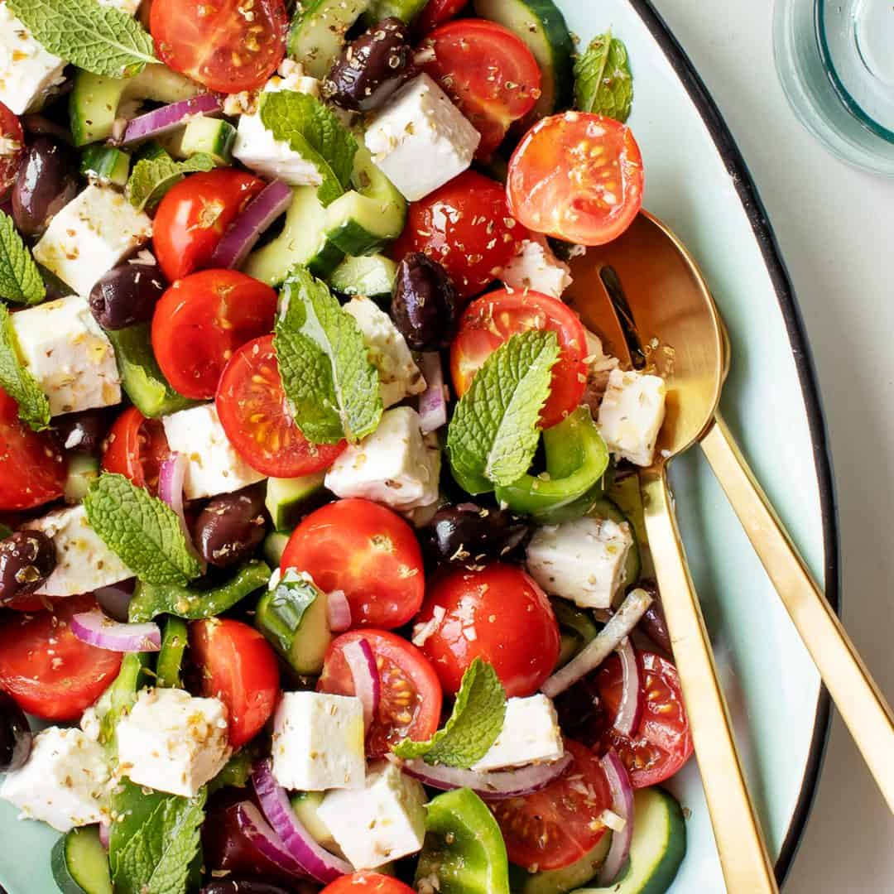

Greek Salad

Description
Authentic Greek salad - classic Mediterranean cuisine
Ingredients
- Cucumber
- Tomatoes
- Green bell pepper
- 1/2 Red onion
- 1/4 cup Kalamata olives
- 2 T Red wine vinegar
- 2 T Olive oil
- 2 T Oregano
- Salt and pepper
- Feta
- Za'atar
Instructions
- Make vinaigrette : Mix together red wine vinegar, olive oil, oregano, salt, and pepper
- Chop vegetables : slice cucumbers and cut into quarters. Cut tomatoes into quarters. Thinly slice onions. Chop green pepper. Chop olives
- Add vegetables into bowl. Add vinaigrette. Mix everything together
- refrigerate for one hour
- To serve, scoop 1/2 cup salad into a bowl. Top with slice of feta and sprinkle on Za'atar